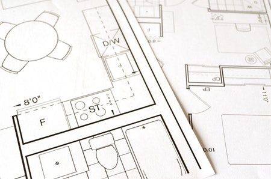

Welcome To The Building Buddy
When people start a plan project, it is difficult to organize materials, labor,
time, and cost. We are going to make an app called Building Buddy that will be
an estimating program designed to keep track of construction projects for the average person.
Its purpose is to help people who need to know how to go about doing work around their home. It will list all of
the materials required for different types of projects around the house and keep track of what you need,
so you do not have to worry about forgetting materials. There will be market prices for products you need,
as well as the ability to manually change prices if you find something cheaper, which will make budgeting
your projects much easier than doing it manually. Organizing this information in one place also reduces the
risk of human error, since Building Buddy will calculate costs.
Read More

Easy-To-Use
The biggest benefit of using the Building Buddy is
easy-to-use interface. It will take less time to learn
which means fast project completion. The Building Buddy
is designed to boost efficiency and save time and money.
Accuracy
Accuracy has never been more important for client to
track actual labor, material, and equipment costs.
Client needs to be able to keep track of back orders as
well as installed and remaining materials. This all starts
with accuracy to determine the job's closest-to-true cost.
Flexibility
The Building Buddy is flexible. You can easily change a type
of material to estimate, adjust units of measure, square footage of
the project etc. The Building Buddy is
capable of factoring labor or material cost for every line of the project
to reflect different projects.